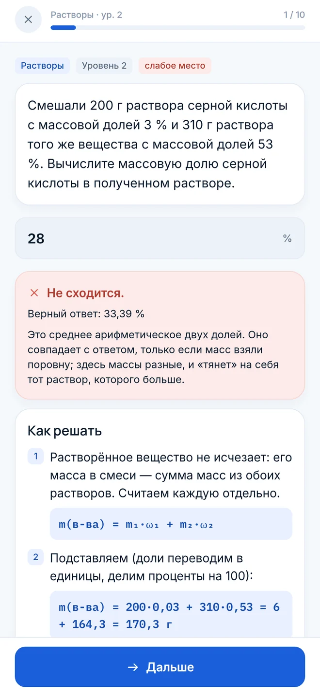
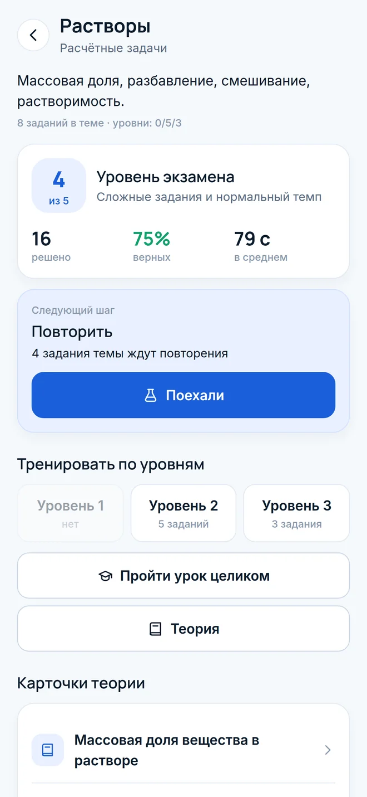
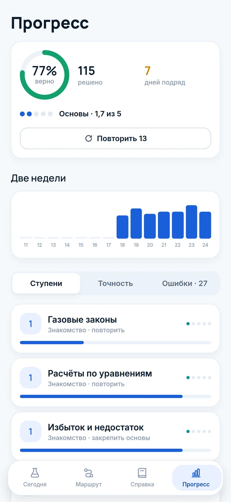
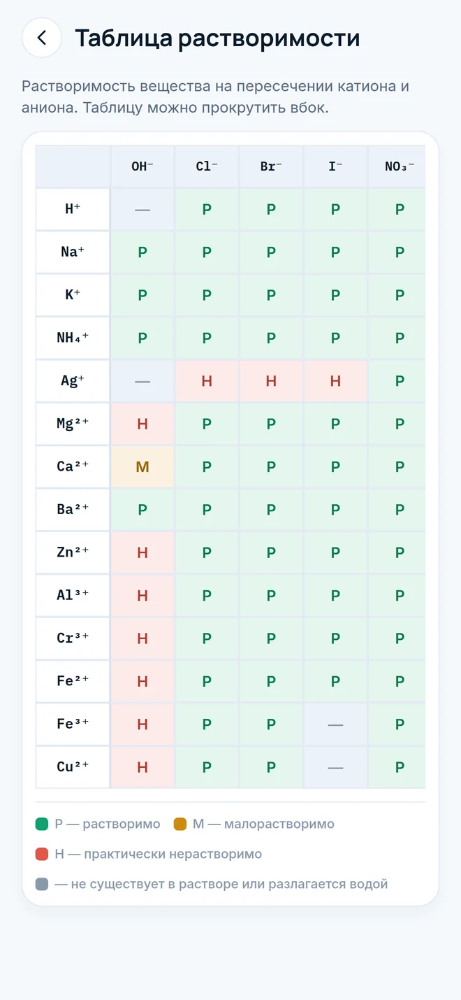

8–9 класс
Моль и молярная масса, формулы, уравнения реакций, растворы, классы веществ.
Тренажёр по химии для iPhone
От 8 класса до первого курса медицинского. Задачи с новыми числами каждый раз, разбор каждой ошибки и маршрут по темам — чтобы понимать, а не заучивать ответы.
Бесплатно · без рекламы · без регистрации · работает офлайн
Разбор ошибок
После ответа — пошаговое решение с формулами. А если ошибка типовая, приложение узнаёт её и объясняет адресно: взяли среднее арифметическое вместо расчёта по массам, посчитали долю вместо процентов, ошиблись в десять раз, округлили слишком рано.

Задачи не заканчиваются
Условия генерируются: массы, объёмы, вещества и доли каждый раз новые. Тренироваться можно сколько нужно, пока тема не встанет на место. Рядом — задания в формате ЕГЭ: на соответствие, множественный выбор, расстановку коэффициентов и цепочки превращений.

Маршрут и повторения
Короткая диагностика на старте показывает, с чего начинать. Дальше — маршрут по темам с учётом зависимостей: гидролиз не придёт раньше электролитов. Ошибки возвращаются на повторение через день, через неделю, через месяц.
Ступень растёт не за количество решённого, а за уровень заданий, которые получаются уверенно.

Четыре ступени
Всё, что ниже вашей ступени, остаётся открытым — основы можно повторять в любой момент.
Моль и молярная масса, формулы, уравнения реакций, растворы, классы веществ.
Школьный курс целиком: электролиты, ОВР, скорость и равновесие, органика. База ЕГЭ.
Подготовка к поступлению в медицинский: сложные расчётные задачи и цепочки превращений.
Общая и неорганическая химия вуза: концентрации, pH, буферы, ПР, коллигативные свойства.
Справочник под рукой
Открывается прямо во время решения задачи — не нужно выходить из тренировки.

Весь учебный материал уже внутри. Решать можно в метро, в самолёте и на даче.
Нет аккаунтов, аналитики и рекламных трекеров. Прогресс хранится только на вашем телефоне.
Никаких подписок, покупок внутри и баннеров посреди задачи.
По ней «Моль» построит маршрут и покажет, какие темы подтянуть первыми.
Скоро вApp Store